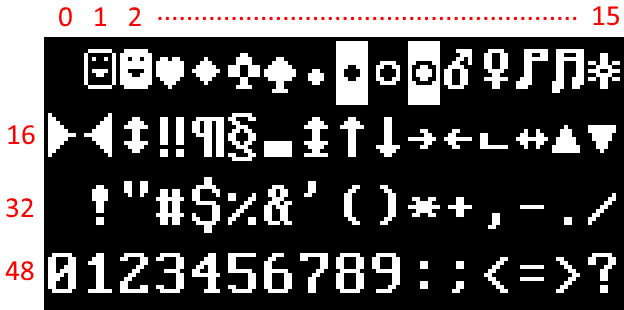

Basic font information
Because of the way the SadConsole is designed, you use “tile sets” (a sprite sheet) that maps individual tiles to character codes. Therefore, the “tile set” you use is a set of indexed graphics, or, as is the default with SadConsole, a “tile set” of font characters.

NOTE
Normally the background of the font texture is transparent, not black. It is black just for example purposes.
Each graphical font has a special config file that tells SadConsole how to read it. Regardless of how the font is configured, it is always used in the same way. The font is broken down into cells which are referenced by index. This works by starting at index 0 for the top-left cell, and moving right, counting up from 0. Once the index reaches the end of the line, it moves to the next line continuing to count.

This is how you write to the console. The 0 character on the keyboard is character code 48, which also happens to be the index in the font file that character 0 is placed. By default, all of the characters represented in the font file are placed in their matching character index. Character A (code 65) is placed at index 65, while character z (code 122) is placed at index 122, and so on.
FontMaster
When a font is loaded, a SadConsole.FontMaster object is created. This is used to generate font objects used throughout SadConsole. There are 6 sizes of fonts per font master, each relative to the existing font.
- Quarter
- Half
- One
- Two
- Three
- Four
For example, if you have a font is made up of 4x8 characters and you generate a Two variation of the font, the rendering output will display the characters x2 of the original, 8x16 in size. If you generate a Quarter variation of that font, you would end up with x0.25` the original, 1x4 in size.
Change the font of a console
The Font property of a console or surface determines how each character will look when rendered. After you’ve loaded a font, you can easily use that font with any console. By default, all consoles created will use the SadConsole.Global.FontDefault font.
1 | var myConsole = new SadConsole.Console(10, 10); |
You can change the font of the console based on the main font used by SadConsole. For example, this would initialize a new console with the default font doubled in size:
1 | var myConsole = new SadConsole.Console(10, 10, SadConsole.Global.FontDefault.Master.GetFont(Font.FontSizes.Two)); |
You can load a new font with SadConsole.Global.LoadFont. This adds the font into the system.
1 | SadConsole.FontMaster fontMaster = SadConsole.Global.LoadFont("filename.font"); |
Set the font on the text surface that the console is using to the new font.
1 | myConsole.Font = fontMaster.GetFont(SadConsole.Font.FontSizes.One); |
You can use a double sized font (x2 on both axis) by changing the GetFont call.
1 | myConsole.Font = fontMaster.GetFont(SadConsole.Font.FontSizes.Two); |
You can also change the font of a console without loading another font.